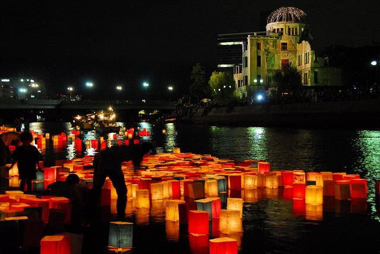
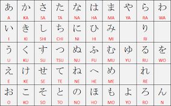

日本留学

想像してみてください。クラスを受講してルーチンに戻る代わりに、教室を離れて新しい場所を探索し、日本語を練習することができます。毎日のように日本語を習得し、実際にあなたの知識を提示しているので、あなたの日本語への流暢さはとても速く進歩します。
私たちはあなたの交換の成功のためにすべてを準備します：快適な学習環境のある少人数クラス、経験豊富な教師、そして多くの個別の注意。日本での交流の後、日本人の進化に驚くことでしょう

言語
原型
日本語は世界で6番目に話されている言語です。しかし、国外ではほとんど使用されておらず、日本語の起源については多くの説があります。その構文は韓国語に似ているというコンセンサスに加えて、言語がトルコ語やモンゴル語などのアルタイ語に構文的にアプローチすると、多くの研究者が信じています。また、その形態と語彙が南のマレー語-ポリネシア語から先史時代の影響を受けているという証拠もあります。
書面
日本語の書記体系は中国語から来ましたが、日本語と中国語で話される言語は完全に異なります。 5世紀から6世紀の間に漢字が導入された後、漢字の変種である2つの表音文字（ひらがなとカタカナ）が追加されましたが、現在でも多くの地方の方言が使用されています。標準的な日本語は、東京の住民のスピーチに基づいて、ラジオ、テレビ、映画などのメディアの影響により、徐々に全国に広がっていますが、特に京都と大阪で話されている方言は発展し続けています。あなたの名声。

ブラジル語翻訳バージョン:
メールアドレス
alineamy@outlook.jp
Espíritos Santos - ES
Vila Velha - VV
携帯:
(27)99242-7564